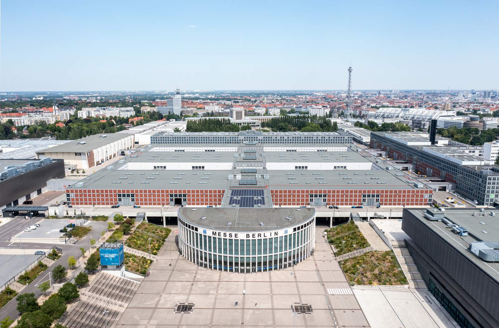

Venue · Exhibition grounds
Messe Berlin (Berlin ExpoCenter City)
- Type
- Exhibition grounds
- Location
- Berlin, Germany
- Address
- Messedamm 22, 14055 Berlin
- Exhibition space
- 190,000 m²
- Halls
- Officially 190,000 m² of hall and event space across 27 exhibition and event halls, including CityCube Berlin, hub27 and +palais.Berlin. CityCube Berlin (Messedamm 26) is published separately at over 22,000 m² of event space for up to 11,000 people, with two main levels of 6,015 m² and 5,934 m², a column-free Hall B, and more than 50 meeting and conference rooms; it connects to Hall 7 and exhibition halls 2 and 4.
- Official website
- https://www.messe-berlin.de/
About
Berlin's main exhibition campus under the Funkturm, operated as Berlin ExpoCenter City by Messe Berlin. The official locations page states 190,000 m² of flexible hall and event space in 27 halls, with a direct link to CityCube Berlin, the on-site congress and expo building used for large conferences. Atlas events include IFA, WeAreDevelopers (CityCube and the South Entrance) and BOOT & FUN.
Upcoming events
- IFA Berlin 2027Berlin, GermanyTech
- WeAreDevelopers World Congress 2027Berlin, GermanyTech
- BOOT & FUN Berlin at OutVenture 2026Berlin, GermanyBoat & Yacht
- BOOT & FUN Berlin at OutVenture 2027Berlin, GermanyBoat & Yacht
Sources
- Official source — https://www.messe-berlin.de/en/locations/expocenter-city
- Official source — https://www.messe-berlin.de/en/locations/citycube-berlin